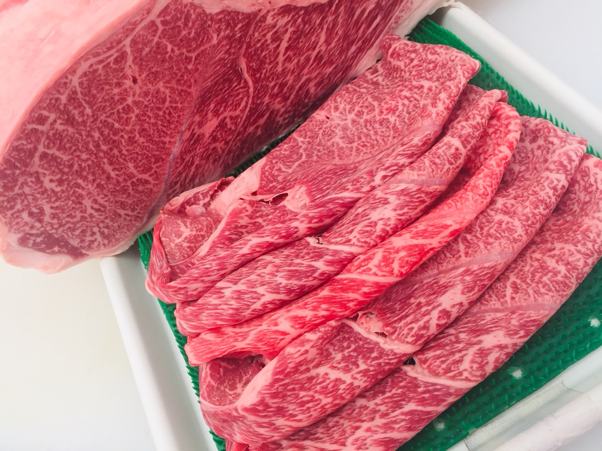
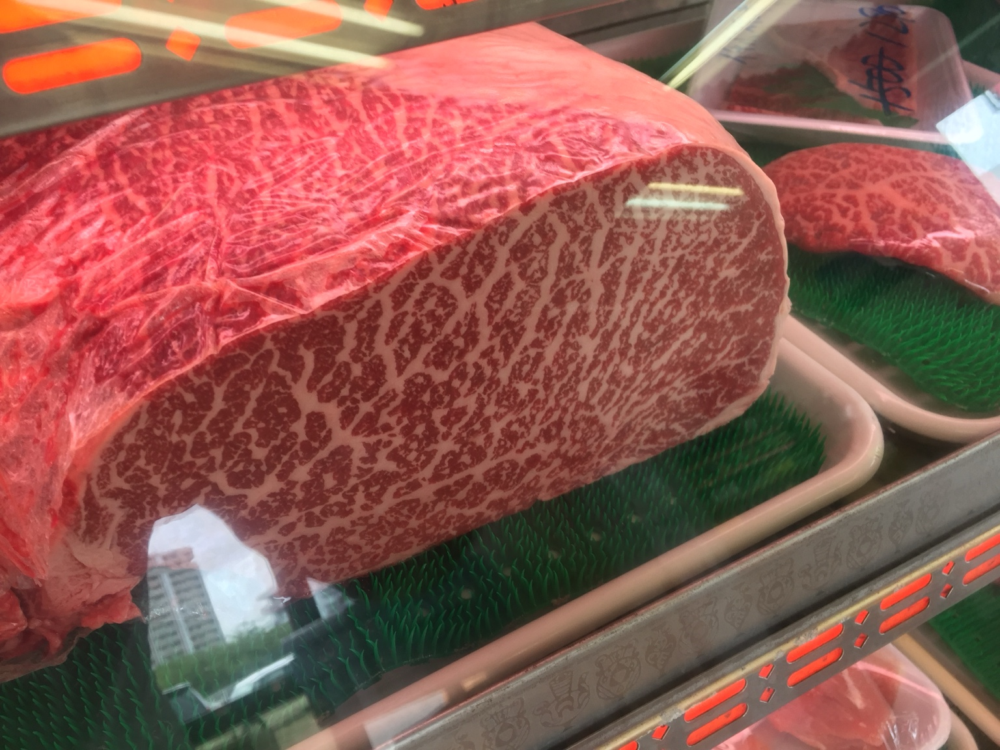
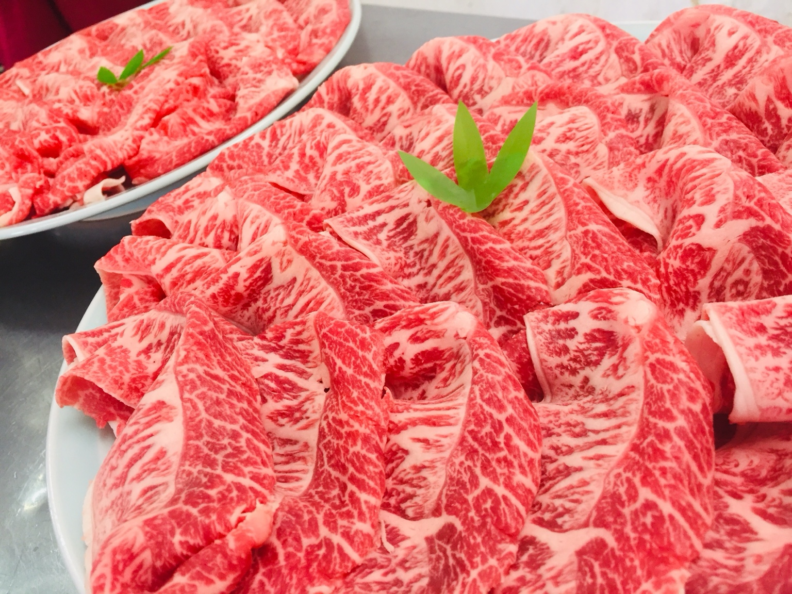
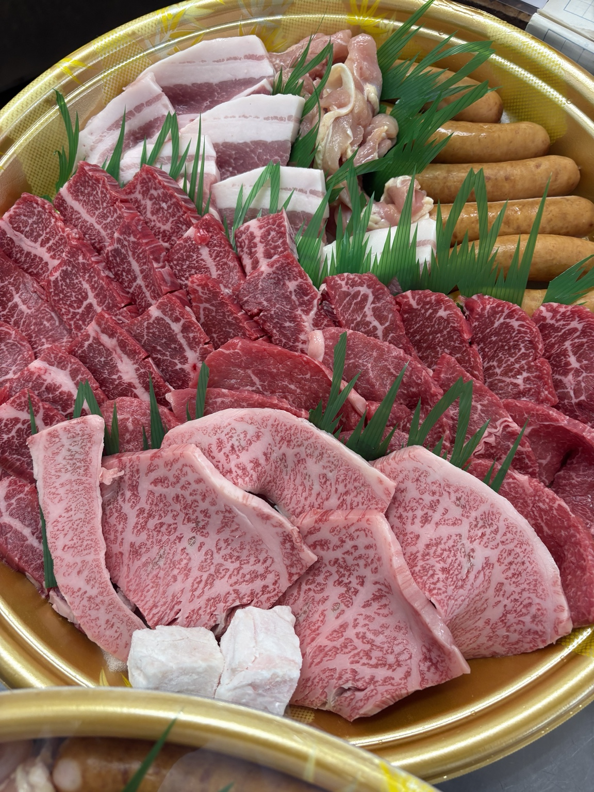
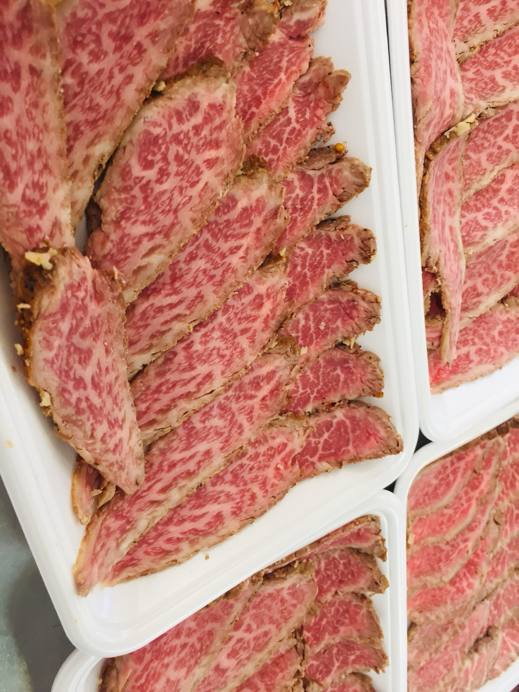
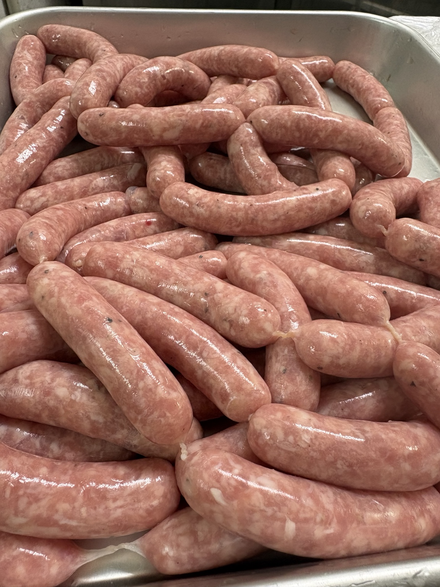
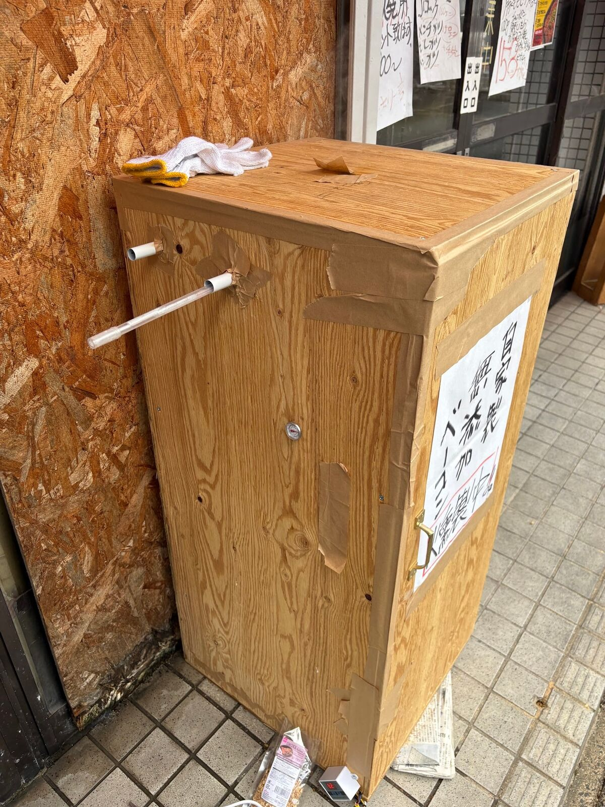
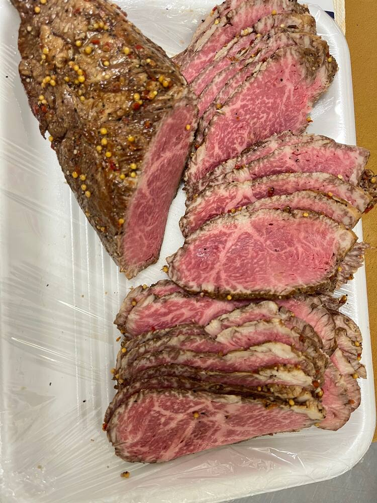

選ぶ
黒毛和牛や赤身肉など、肉の旨みを楽しめる素材を丁寧に選びます。
北九州市小倉南区で20年以上。黒毛和牛や焼肉、手作り加工品を扱う精肉店です。
非公開試作版｜商品価格・販売状況・食品表示は店主確認後に確定します。

肉の品質、職人の技術、地域のお客様との信頼。写真から仕事の姿勢まで伝わるサイトを目指します。

黒毛和牛や赤身肉など、肉の旨みを楽しめる素材を丁寧に選びます。

焼肉など用途に合わせて、食卓を想像しながら仕立てます。

人数や料理に合わせた肉選びを、店頭や電話で相談できます。
写真は提供された素材から選定。商品名・販売中表示・価格は確認前のため断定していません。
掲載候補｜販売状況要確認
掲載候補｜内容・価格要確認

土曜日限定の記載あり｜要確認

サルシッチャ風の記載あり｜要確認
今回の素材では、ローストビーフの仕上がりや自家製ソーセージを確認できました。動画や加工風景は、追加素材が届いた段階で差し替えます。
「肉の野田らしい」味を、改良しながら。
ベーコン、ソーセージ、ローストビーフ。店で撮影した写真から順に掲載します。

肉の野田のベーコンは、大量生産ではなく、ひとつずつ手をかけて仕込みます。味つけは、塩ときび砂糖、ブラックペッパーのシンプルなもの。豚肉そのものの旨みと、桜チップの香りを楽しんでいただくためです。
きめ細かい肉質で、脂の甘みが強い豚肉を使っています。
「燻製風味」ではなく、桜でじっくり仕上げた手づくりです。
目指したのは「ソーセージ」ではなく、「肉を食べるソーセージ」。イタリアのサルシッチャのように、粗挽き肉の食感と肉汁を味わっていただく生ソーセージです。
はじめは細挽きと粗挽きを混ぜて試作しました。食べ比べを重ねた結果、粗挽きだけのほうが肉の食感がよく、「肉を食べている」満足感が高かったため、今のかたちになりました。
使うのは、塩・きび砂糖・ブラックペッパー・ナツメグだけ。ガーリックやオニオンなどの香辛料は使いません。肉本来の旨みと甘みを、まず感じていただきたいからです。
肉は毎回まったく同じではありません。だからこそ、肉の状態を見て、水分や練り具合を微調整しています。20年以上の経験が生きる仕事です。
超弱火で、じっくり、ゆっくり。
これがいちばんおいしく焼くコツです。
強火は厳禁です。皮だけが先に焼けて破れ、肉汁が流れ出てしまいます。超弱火でじっくりゆっくり火を入れることが、肉汁を閉じ込め、おいしさにつながります。
※燻製や加熱はしていない生ソーセージです。必ず中心まで加熱してお召し上がりください。

肉の野田だから作れる、本物のローストビーフです。和牛本来の香りと旨みを大切に、味つけはシンプルに。素材のおいしさを、いちばんに引き出します。
ご予約注文で、いつでもお作りします。
「また食べたい」と思っていただける一品を。
用途や人数をお聞きしながら、お肉選びをお手伝いします。